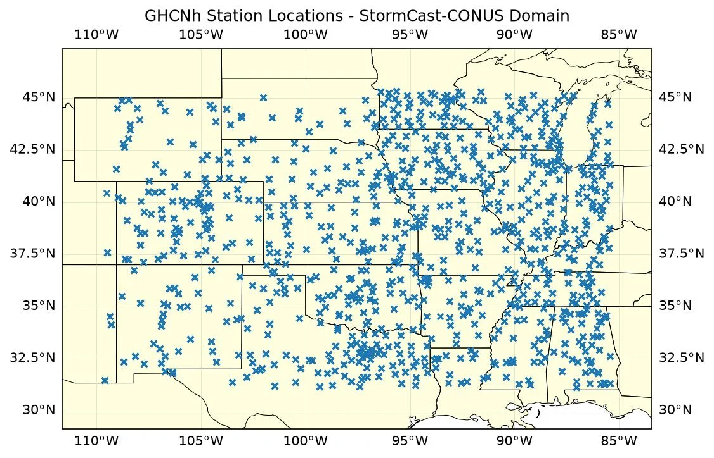
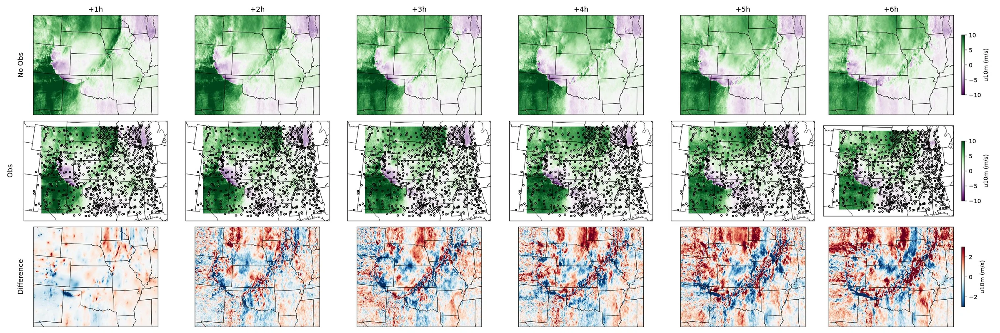
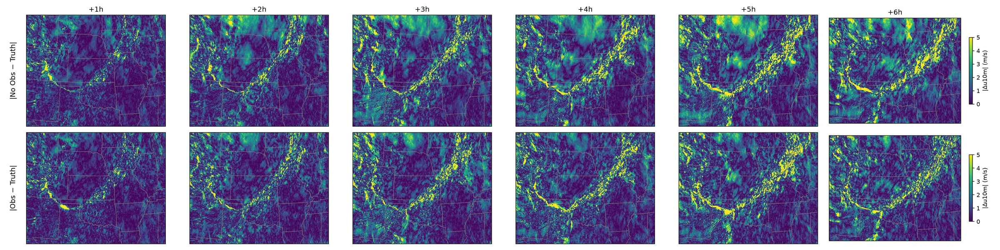

StormCast-CONUS Score-Based Data Assimilation¶
Running StormCast-CONUS with guided diffusion posterior sampling to assimilate observations.
This example demonstrates how to use the StormCastConusSDA generative model with score-based data assimilation (SDA) over a CONUS subdomain. Sparse in-situ surface observations from NOAA Global Historical Climatology Network Hourly (GHCNh) are assimilated at each forecast step using diffusion posterior sampling (DPS) guidance. Two forecasts from the central United States are run to illustrate the impact of data assimilation: one without observations and one with GHCNh surface station data.
In this example you will learn:
- How to load StormCastConusSDA and configure SDA parameters
- Fetching HRRR initial conditions, GFS conditioning, and GHCNh surface observations
- Running the model iteratively with and without observation assimilation
- Comparing assimilated and non-assimilated forecasts
Set Up¶
This example requires the following components:
- Assimilation Model:
earth2studio.models.da.StormCastConusSDAconfigured with SDA parameters. - Datasource (state): HRRR analysis
earth2studio.data.HRRR. - Datasource (conditioning):
earth2studio.data.GFS_FX. - Datasource (obs): NOAA GHCNh surface stations
earth2studio.data.GHCNHourly.
StormCast-CONUS uses the HRRR domain at 3 km resolution. When an observation DataFrame is passed to each step, diffusion posterior sampling (DPS) steers the denoising trajectory toward the observed values.
import os
os.makedirs("outputs", exist_ok=True)
from dotenv import load_dotenv
load_dotenv() # TODO: make common example prep function
from datetime import timedelta
import numpy as np
import xarray as xr
from loguru import logger
from tqdm import tqdm
logger.remove()
logger.add(lambda msg: tqdm.write(msg, end=""), colorize=True)
from earth2studio.data import GFS_FX, HRRR, GHCNHourly, fetch_data
from earth2studio.models.da import StormCastConusSDA
from earth2studio.run import map_field
# Load the default model package
package = StormCastConusSDA.load_default_package()
# Configure SDA: sda_std_obs is the assumed normalised observation noise std per
# variable (lower = trust observations more).
# sda_gamma is the DPS step-size scaling (lower = stronger guidance from obs).
#
# Crop to the central-US subdomain to reduce memory. Omit the limits to use CONUS.
model = StormCastConusSDA.load_model(
package,
hrrr_lat_lim=(273, 785),
hrrr_lon_lim=(579, 1219),
num_diffusion_steps=18,
num_sda_diffusion_steps=96,
time_tolerance=np.timedelta64(10, "m"),
sda_std_obs=0.15,
sda_gamma=1e-3,
)
model = model.to("cuda:0")
hrrr = HRRR()
Console output228 lines
Downloading config.json: 0%| | 0.00/37.0 [00:00<?, ?B/s]
Downloading config.json: 100%|██████████| 37.0/37.0 [00:00<00:00, 431B/s]
Downloading model.yaml: 0%| | 0.00/122 [00:00<?, ?B/s]
Downloading model.yaml: 100%|██████████| 122/122 [00:00<00:00, 1.27kB/s]
Downloading StormCastCONUS-high.mdlus: 0%| | 0.00/0.99G [00:00<?, ?B/s]
Downloading StormCastCONUS-high.mdlus: 1%| | 10.0M/0.99G [00:00<00:36, 28.8MB/s]
Downloading StormCastCONUS-high.mdlus: 3%|▎ | 30.0M/0.99G [00:00<00:14, 69.5MB/s]
Downloading StormCastCONUS-high.mdlus: 5%|▍ | 50.0M/0.99G [00:00<00:10, 94.0MB/s]
Downloading StormCastCONUS-high.mdlus: 7%|▋ | 70.0M/0.99G [00:00<00:09, 110MB/s]
Downloading StormCastCONUS-high.mdlus: 9%|▉ | 90.0M/0.99G [00:00<00:07, 122MB/s]
Downloading StormCastCONUS-high.mdlus: 11%|█ | 110M/0.99G [00:01<00:07, 126MB/s]
Downloading StormCastCONUS-high.mdlus: 13%|█▎ | 130M/0.99G [00:01<00:07, 131MB/s]
Downloading StormCastCONUS-high.mdlus: 15%|█▍ | 150M/0.99G [00:01<00:06, 132MB/s]
Downloading StormCastCONUS-high.mdlus: 17%|█▋ | 170M/0.99G [00:01<00:06, 134MB/s]
Downloading StormCastCONUS-high.mdlus: 19%|█▊ | 190M/0.99G [00:01<00:06, 138MB/s]
Downloading StormCastCONUS-high.mdlus: 21%|██ | 210M/0.99G [00:01<00:05, 141MB/s]
Downloading StormCastCONUS-high.mdlus: 23%|██▎ | 230M/0.99G [00:01<00:05, 142MB/s]
Downloading StormCastCONUS-high.mdlus: 25%|██▍ | 250M/0.99G [00:02<00:05, 146MB/s]
Downloading StormCastCONUS-high.mdlus: 27%|██▋ | 270M/0.99G [00:02<00:05, 148MB/s]
Downloading StormCastCONUS-high.mdlus: 29%|██▊ | 290M/0.99G [00:02<00:05, 147MB/s]
Downloading StormCastCONUS-high.mdlus: 31%|███ | 310M/0.99G [00:02<00:05, 146MB/s]
Downloading StormCastCONUS-high.mdlus: 33%|███▎ | 330M/0.99G [00:02<00:04, 144MB/s]
Downloading StormCastCONUS-high.mdlus: 35%|███▍ | 350M/0.99G [00:02<00:04, 144MB/s]
Downloading StormCastCONUS-high.mdlus: 37%|███▋ | 370M/0.99G [00:03<00:04, 143MB/s]
Downloading StormCastCONUS-high.mdlus: 38%|███▊ | 390M/0.99G [00:03<00:04, 146MB/s]
Downloading StormCastCONUS-high.mdlus: 40%|████ | 410M/0.99G [00:03<00:04, 140MB/s]
Downloading StormCastCONUS-high.mdlus: 42%|████▏ | 430M/0.99G [00:03<00:04, 141MB/s]
Downloading StormCastCONUS-high.mdlus: 44%|████▍ | 450M/0.99G [00:03<00:04, 137MB/s]
Downloading StormCastCONUS-high.mdlus: 46%|████▋ | 470M/0.99G [00:03<00:04, 137MB/s]
Downloading StormCastCONUS-high.mdlus: 48%|████▊ | 490M/0.99G [00:03<00:03, 142MB/s]
Downloading StormCastCONUS-high.mdlus: 50%|█████ | 510M/0.99G [00:04<00:03, 137MB/s]
Downloading StormCastCONUS-high.mdlus: 52%|█████▏ | 530M/0.99G [00:04<00:03, 137MB/s]
Downloading StormCastCONUS-high.mdlus: 54%|█████▍ | 550M/0.99G [00:04<00:03, 141MB/s]
Downloading StormCastCONUS-high.mdlus: 56%|█████▌ | 570M/0.99G [00:04<00:03, 146MB/s]
Downloading StormCastCONUS-high.mdlus: 58%|█████▊ | 590M/0.99G [00:04<00:03, 142MB/s]
Downloading StormCastCONUS-high.mdlus: 60%|██████ | 610M/0.99G [00:04<00:03, 137MB/s]
Downloading StormCastCONUS-high.mdlus: 62%|██████▏ | 630M/0.99G [00:04<00:02, 142MB/s]
Downloading StormCastCONUS-high.mdlus: 64%|██████▍ | 650M/0.99G [00:05<00:02, 140MB/s]
Downloading StormCastCONUS-high.mdlus: 66%|██████▌ | 670M/0.99G [00:05<00:02, 138MB/s]
Downloading StormCastCONUS-high.mdlus: 68%|██████▊ | 690M/0.99G [00:05<00:02, 137MB/s]
Downloading StormCastCONUS-high.mdlus: 70%|███████ | 710M/0.99G [00:05<00:02, 135MB/s]
Downloading StormCastCONUS-high.mdlus: 72%|███████▏ | 730M/0.99G [00:05<00:02, 139MB/s]
Downloading StormCastCONUS-high.mdlus: 74%|███████▍ | 750M/0.99G [00:05<00:02, 135MB/s]
Downloading StormCastCONUS-high.mdlus: 76%|███████▌ | 770M/0.99G [00:06<00:01, 137MB/s]
Downloading StormCastCONUS-high.mdlus: 78%|███████▊ | 790M/0.99G [00:06<00:01, 137MB/s]
Downloading StormCastCONUS-high.mdlus: 80%|███████▉ | 810M/0.99G [00:06<00:01, 134MB/s]
Downloading StormCastCONUS-high.mdlus: 82%|████████▏ | 830M/0.99G [00:06<00:01, 132MB/s]
Downloading StormCastCONUS-high.mdlus: 84%|████████▍ | 850M/0.99G [00:06<00:01, 134MB/s]
Downloading StormCastCONUS-high.mdlus: 86%|████████▌ | 870M/0.99G [00:06<00:01, 127MB/s]
Downloading StormCastCONUS-high.mdlus: 88%|████████▊ | 890M/0.99G [00:07<00:01, 129MB/s]
Downloading StormCastCONUS-high.mdlus: 90%|████████▉ | 910M/0.99G [00:07<00:00, 126MB/s]
Downloading StormCastCONUS-high.mdlus: 92%|█████████▏| 930M/0.99G [00:07<00:00, 132MB/s]
Downloading StormCastCONUS-high.mdlus: 94%|█████████▎| 950M/0.99G [00:07<00:00, 132MB/s]
Downloading StormCastCONUS-high.mdlus: 96%|█████████▌| 970M/0.99G [00:07<00:00, 138MB/s]
Downloading StormCastCONUS-high.mdlus: 98%|█████████▊| 990M/0.99G [00:07<00:00, 135MB/s]
Downloading StormCastCONUS-high.mdlus: 100%|█████████▉| 0.99G/0.99G [00:07<00:00, 136MB/s]
Downloading StormCastCONUS-high.mdlus: 100%|██████████| 0.99G/0.99G [00:07<00:00, 134MB/s]
Downloading StormCastCONUS-pz-low.mdlus: 0%| | 0.00/0.99G [00:00<?, ?B/s]
Downloading StormCastCONUS-pz-low.mdlus: 1%| | 10.0M/0.99G [00:00<00:19, 54.7MB/s]
Downloading StormCastCONUS-pz-low.mdlus: 3%|▎ | 30.0M/0.99G [00:00<00:10, 95.3MB/s]
Downloading StormCastCONUS-pz-low.mdlus: 5%|▍ | 50.0M/0.99G [00:00<00:08, 115MB/s]
Downloading StormCastCONUS-pz-low.mdlus: 7%|▋ | 70.0M/0.99G [00:00<00:07, 124MB/s]
Downloading StormCastCONUS-pz-low.mdlus: 9%|▉ | 90.0M/0.99G [00:00<00:07, 131MB/s]
Downloading StormCastCONUS-pz-low.mdlus: 11%|█ | 110M/0.99G [00:00<00:07, 132MB/s]
Downloading StormCastCONUS-pz-low.mdlus: 13%|█▎ | 130M/0.99G [00:01<00:06, 137MB/s]
Downloading StormCastCONUS-pz-low.mdlus: 15%|█▍ | 150M/0.99G [00:01<00:06, 142MB/s]
Downloading StormCastCONUS-pz-low.mdlus: 17%|█▋ | 170M/0.99G [00:01<00:06, 144MB/s]
Downloading StormCastCONUS-pz-low.mdlus: 19%|█▊ | 190M/0.99G [00:01<00:06, 141MB/s]
Downloading StormCastCONUS-pz-low.mdlus: 21%|██ | 210M/0.99G [00:01<00:05, 142MB/s]
Downloading StormCastCONUS-pz-low.mdlus: 23%|██▎ | 230M/0.99G [00:01<00:05, 142MB/s]
Downloading StormCastCONUS-pz-low.mdlus: 25%|██▍ | 250M/0.99G [00:01<00:05, 144MB/s]
Downloading StormCastCONUS-pz-low.mdlus: 27%|██▋ | 270M/0.99G [00:02<00:05, 143MB/s]
Downloading StormCastCONUS-pz-low.mdlus: 29%|██▊ | 290M/0.99G [00:02<00:05, 142MB/s]
Downloading StormCastCONUS-pz-low.mdlus: 31%|███ | 310M/0.99G [00:02<00:05, 141MB/s]
Downloading StormCastCONUS-pz-low.mdlus: 33%|███▎ | 330M/0.99G [00:02<00:05, 142MB/s]
Downloading StormCastCONUS-pz-low.mdlus: 35%|███▍ | 350M/0.99G [00:02<00:04, 140MB/s]
Downloading StormCastCONUS-pz-low.mdlus: 37%|███▋ | 370M/0.99G [00:02<00:04, 141MB/s]
Downloading StormCastCONUS-pz-low.mdlus: 38%|███▊ | 390M/0.99G [00:03<00:04, 142MB/s]
Downloading StormCastCONUS-pz-low.mdlus: 40%|████ | 410M/0.99G [00:03<00:04, 140MB/s]
Downloading StormCastCONUS-pz-low.mdlus: 42%|████▏ | 430M/0.99G [00:03<00:04, 140MB/s]
Downloading StormCastCONUS-pz-low.mdlus: 44%|████▍ | 450M/0.99G [00:03<00:05, 118MB/s]
Downloading StormCastCONUS-pz-low.mdlus: 46%|████▋ | 470M/0.99G [00:03<00:04, 125MB/s]
Downloading StormCastCONUS-pz-low.mdlus: 48%|████▊ | 490M/0.99G [00:03<00:04, 129MB/s]
Downloading StormCastCONUS-pz-low.mdlus: 50%|█████ | 510M/0.99G [00:03<00:03, 132MB/s]
Downloading StormCastCONUS-pz-low.mdlus: 52%|█████▏ | 530M/0.99G [00:04<00:03, 134MB/s]
Downloading StormCastCONUS-pz-low.mdlus: 54%|█████▍ | 550M/0.99G [00:04<00:03, 137MB/s]
Downloading StormCastCONUS-pz-low.mdlus: 56%|█████▌ | 570M/0.99G [00:04<00:03, 139MB/s]
Downloading StormCastCONUS-pz-low.mdlus: 58%|█████▊ | 590M/0.99G [00:04<00:03, 141MB/s]
Downloading StormCastCONUS-pz-low.mdlus: 60%|██████ | 610M/0.99G [00:04<00:02, 142MB/s]
Downloading StormCastCONUS-pz-low.mdlus: 62%|██████▏ | 630M/0.99G [00:04<00:02, 142MB/s]
Downloading StormCastCONUS-pz-low.mdlus: 64%|██████▍ | 650M/0.99G [00:05<00:02, 143MB/s]
Downloading StormCastCONUS-pz-low.mdlus: 66%|██████▌ | 670M/0.99G [00:05<00:02, 143MB/s]
Downloading StormCastCONUS-pz-low.mdlus: 68%|██████▊ | 690M/0.99G [00:05<00:02, 144MB/s]
Downloading StormCastCONUS-pz-low.mdlus: 70%|███████ | 710M/0.99G [00:05<00:02, 142MB/s]
Downloading StormCastCONUS-pz-low.mdlus: 72%|███████▏ | 730M/0.99G [00:05<00:02, 143MB/s]
Downloading StormCastCONUS-pz-low.mdlus: 74%|███████▍ | 750M/0.99G [00:05<00:01, 144MB/s]
Downloading StormCastCONUS-pz-low.mdlus: 76%|███████▌ | 770M/0.99G [00:05<00:01, 143MB/s]
Downloading StormCastCONUS-pz-low.mdlus: 78%|███████▊ | 790M/0.99G [00:06<00:01, 143MB/s]
Downloading StormCastCONUS-pz-low.mdlus: 80%|███████▉ | 810M/0.99G [00:06<00:01, 144MB/s]
Downloading StormCastCONUS-pz-low.mdlus: 82%|████████▏ | 830M/0.99G [00:06<00:01, 145MB/s]
Downloading StormCastCONUS-pz-low.mdlus: 84%|████████▍ | 850M/0.99G [00:06<00:01, 145MB/s]
Downloading StormCastCONUS-pz-low.mdlus: 86%|████████▌ | 870M/0.99G [00:06<00:01, 146MB/s]
Downloading StormCastCONUS-pz-low.mdlus: 88%|████████▊ | 890M/0.99G [00:06<00:00, 145MB/s]
Downloading StormCastCONUS-pz-low.mdlus: 90%|████████▉ | 910M/0.99G [00:06<00:00, 145MB/s]
Downloading StormCastCONUS-pz-low.mdlus: 92%|█████████▏| 930M/0.99G [00:07<00:00, 146MB/s]
Downloading StormCastCONUS-pz-low.mdlus: 94%|█████████▎| 950M/0.99G [00:07<00:00, 147MB/s]
Downloading StormCastCONUS-pz-low.mdlus: 96%|█████████▌| 970M/0.99G [00:07<00:00, 147MB/s]
Downloading StormCastCONUS-pz-low.mdlus: 98%|█████████▊| 990M/0.99G [00:07<00:00, 146MB/s]
Downloading StormCastCONUS-pz-low.mdlus: 100%|█████████▉| 0.99G/0.99G [00:07<00:00, 143MB/s]
Downloading StormCastCONUS-pz-low.mdlus: 100%|██████████| 0.99G/0.99G [00:07<00:00, 139MB/s]
Downloading StormCastCONUS-tq-low.mdlus: 0%| | 0.00/0.99G [00:00<?, ?B/s]
Downloading StormCastCONUS-tq-low.mdlus: 1%| | 10.0M/0.99G [00:00<00:20, 51.2MB/s]
Downloading StormCastCONUS-tq-low.mdlus: 3%|▎ | 30.0M/0.99G [00:00<00:10, 100MB/s]
Downloading StormCastCONUS-tq-low.mdlus: 5%|▍ | 50.0M/0.99G [00:00<00:08, 124MB/s]
Downloading StormCastCONUS-tq-low.mdlus: 7%|▋ | 70.0M/0.99G [00:00<00:07, 134MB/s]
Downloading StormCastCONUS-tq-low.mdlus: 9%|▉ | 90.0M/0.99G [00:00<00:07, 137MB/s]
Downloading StormCastCONUS-tq-low.mdlus: 11%|█ | 110M/0.99G [00:00<00:06, 144MB/s]
Downloading StormCastCONUS-tq-low.mdlus: 13%|█▎ | 130M/0.99G [00:01<00:06, 139MB/s]
Downloading StormCastCONUS-tq-low.mdlus: 15%|█▍ | 150M/0.99G [00:01<00:06, 141MB/s]
Downloading StormCastCONUS-tq-low.mdlus: 17%|█▋ | 170M/0.99G [00:01<00:06, 144MB/s]
Downloading StormCastCONUS-tq-low.mdlus: 19%|█▊ | 190M/0.99G [00:01<00:06, 133MB/s]
Downloading StormCastCONUS-tq-low.mdlus: 21%|██ | 210M/0.99G [00:01<00:06, 128MB/s]
Downloading StormCastCONUS-tq-low.mdlus: 23%|██▎ | 230M/0.99G [00:01<00:07, 113MB/s]
Downloading StormCastCONUS-tq-low.mdlus: 25%|██▍ | 250M/0.99G [00:02<00:06, 119MB/s]
Downloading StormCastCONUS-tq-low.mdlus: 27%|██▋ | 270M/0.99G [00:02<00:06, 115MB/s]
Downloading StormCastCONUS-tq-low.mdlus: 29%|██▊ | 290M/0.99G [00:02<00:06, 123MB/s]
Downloading StormCastCONUS-tq-low.mdlus: 31%|███ | 310M/0.99G [00:02<00:05, 129MB/s]
Downloading StormCastCONUS-tq-low.mdlus: 33%|███▎ | 330M/0.99G [00:02<00:05, 132MB/s]
Downloading StormCastCONUS-tq-low.mdlus: 35%|███▍ | 350M/0.99G [00:02<00:04, 139MB/s]
Downloading StormCastCONUS-tq-low.mdlus: 37%|███▋ | 370M/0.99G [00:03<00:05, 133MB/s]
Downloading StormCastCONUS-tq-low.mdlus: 38%|███▊ | 390M/0.99G [00:03<00:04, 132MB/s]
Downloading StormCastCONUS-tq-low.mdlus: 40%|████ | 410M/0.99G [00:03<00:04, 134MB/s]
Downloading StormCastCONUS-tq-low.mdlus: 42%|████▏ | 430M/0.99G [00:03<00:04, 136MB/s]
Downloading StormCastCONUS-tq-low.mdlus: 44%|████▍ | 450M/0.99G [00:03<00:04, 138MB/s]
Downloading StormCastCONUS-tq-low.mdlus: 46%|████▋ | 470M/0.99G [00:03<00:04, 136MB/s]
Downloading StormCastCONUS-tq-low.mdlus: 48%|████▊ | 490M/0.99G [00:03<00:04, 125MB/s]
Downloading StormCastCONUS-tq-low.mdlus: 50%|█████ | 510M/0.99G [00:04<00:04, 124MB/s]
Downloading StormCastCONUS-tq-low.mdlus: 52%|█████▏ | 530M/0.99G [00:04<00:03, 128MB/s]
Downloading StormCastCONUS-tq-low.mdlus: 54%|█████▍ | 550M/0.99G [00:04<00:03, 129MB/s]
Downloading StormCastCONUS-tq-low.mdlus: 56%|█████▌ | 570M/0.99G [00:04<00:03, 126MB/s]
Downloading StormCastCONUS-tq-low.mdlus: 58%|█████▊ | 590M/0.99G [00:04<00:03, 123MB/s]
Downloading StormCastCONUS-tq-low.mdlus: 60%|██████ | 610M/0.99G [00:04<00:03, 125MB/s]
Downloading StormCastCONUS-tq-low.mdlus: 62%|██████▏ | 630M/0.99G [00:05<00:03, 133MB/s]
Downloading StormCastCONUS-tq-low.mdlus: 64%|██████▍ | 650M/0.99G [00:05<00:02, 138MB/s]
Downloading StormCastCONUS-tq-low.mdlus: 66%|██████▌ | 670M/0.99G [00:05<00:02, 141MB/s]
Downloading StormCastCONUS-tq-low.mdlus: 68%|██████▊ | 690M/0.99G [00:05<00:02, 130MB/s]
Downloading StormCastCONUS-tq-low.mdlus: 70%|███████ | 710M/0.99G [00:05<00:02, 124MB/s]
Downloading StormCastCONUS-tq-low.mdlus: 72%|███████▏ | 730M/0.99G [00:05<00:02, 115MB/s]
Downloading StormCastCONUS-tq-low.mdlus: 74%|███████▍ | 750M/0.99G [00:06<00:02, 116MB/s]
Downloading StormCastCONUS-tq-low.mdlus: 76%|███████▌ | 770M/0.99G [00:06<00:02, 117MB/s]
Downloading StormCastCONUS-tq-low.mdlus: 78%|███████▊ | 790M/0.99G [00:06<00:02, 106MB/s]
Downloading StormCastCONUS-tq-low.mdlus: 80%|███████▉ | 810M/0.99G [00:06<00:01, 112MB/s]
Downloading StormCastCONUS-tq-low.mdlus: 82%|████████▏ | 830M/0.99G [00:06<00:01, 118MB/s]
Downloading StormCastCONUS-tq-low.mdlus: 84%|████████▍ | 850M/0.99G [00:07<00:01, 117MB/s]
Downloading StormCastCONUS-tq-low.mdlus: 86%|████████▌ | 870M/0.99G [00:07<00:01, 125MB/s]
Downloading StormCastCONUS-tq-low.mdlus: 88%|████████▊ | 890M/0.99G [00:07<00:01, 127MB/s]
Downloading StormCastCONUS-tq-low.mdlus: 90%|████████▉ | 910M/0.99G [00:07<00:00, 134MB/s]
Downloading StormCastCONUS-tq-low.mdlus: 92%|█████████▏| 930M/0.99G [00:07<00:00, 137MB/s]
Downloading StormCastCONUS-tq-low.mdlus: 94%|█████████▎| 950M/0.99G [00:07<00:00, 142MB/s]
Downloading StormCastCONUS-tq-low.mdlus: 96%|█████████▌| 970M/0.99G [00:07<00:00, 146MB/s]
Downloading StormCastCONUS-tq-low.mdlus: 98%|█████████▊| 990M/0.99G [00:08<00:00, 143MB/s]
Downloading StormCastCONUS-tq-low.mdlus: 100%|█████████▉| 0.99G/0.99G [00:08<00:00, 142MB/s]
Downloading StormCastCONUS-tq-low.mdlus: 100%|██████████| 0.99G/0.99G [00:08<00:00, 128MB/s]
Downloading StormCastCONUS-uv-low.mdlus: 0%| | 0.00/0.99G [00:00<?, ?B/s]
Downloading StormCastCONUS-uv-low.mdlus: 1%| | 10.0M/0.99G [00:00<00:18, 55.4MB/s]
Downloading StormCastCONUS-uv-low.mdlus: 3%|▎ | 30.0M/0.99G [00:00<00:09, 106MB/s]
Downloading StormCastCONUS-uv-low.mdlus: 5%|▍ | 50.0M/0.99G [00:00<00:07, 131MB/s]
Downloading StormCastCONUS-uv-low.mdlus: 7%|▋ | 70.0M/0.99G [00:00<00:06, 144MB/s]
Downloading StormCastCONUS-uv-low.mdlus: 9%|▉ | 90.0M/0.99G [00:00<00:06, 147MB/s]
Downloading StormCastCONUS-uv-low.mdlus: 11%|█ | 110M/0.99G [00:00<00:06, 145MB/s]
Downloading StormCastCONUS-uv-low.mdlus: 13%|█▎ | 130M/0.99G [00:01<00:06, 144MB/s]
Downloading StormCastCONUS-uv-low.mdlus: 15%|█▍ | 150M/0.99G [00:01<00:06, 147MB/s]
Downloading StormCastCONUS-uv-low.mdlus: 17%|█▋ | 170M/0.99G [00:01<00:06, 145MB/s]
Downloading StormCastCONUS-uv-low.mdlus: 19%|█▊ | 190M/0.99G [00:01<00:05, 149MB/s]
Downloading StormCastCONUS-uv-low.mdlus: 21%|██ | 210M/0.99G [00:01<00:05, 149MB/s]
Downloading StormCastCONUS-uv-low.mdlus: 23%|██▎ | 230M/0.99G [00:01<00:05, 150MB/s]
Downloading StormCastCONUS-uv-low.mdlus: 25%|██▍ | 250M/0.99G [00:01<00:05, 150MB/s]
Downloading StormCastCONUS-uv-low.mdlus: 27%|██▋ | 270M/0.99G [00:01<00:05, 149MB/s]
Downloading StormCastCONUS-uv-low.mdlus: 29%|██▊ | 290M/0.99G [00:02<00:05, 147MB/s]
Downloading StormCastCONUS-uv-low.mdlus: 31%|███ | 310M/0.99G [00:02<00:04, 149MB/s]
Downloading StormCastCONUS-uv-low.mdlus: 33%|███▎ | 330M/0.99G [00:02<00:04, 147MB/s]
Downloading StormCastCONUS-uv-low.mdlus: 35%|███▍ | 350M/0.99G [00:02<00:04, 147MB/s]
Downloading StormCastCONUS-uv-low.mdlus: 37%|███▋ | 370M/0.99G [00:02<00:04, 152MB/s]
Downloading StormCastCONUS-uv-low.mdlus: 38%|███▊ | 390M/0.99G [00:02<00:04, 151MB/s]
Downloading StormCastCONUS-uv-low.mdlus: 40%|████ | 410M/0.99G [00:02<00:04, 148MB/s]
Downloading StormCastCONUS-uv-low.mdlus: 42%|████▏ | 430M/0.99G [00:03<00:04, 151MB/s]
Downloading StormCastCONUS-uv-low.mdlus: 44%|████▍ | 450M/0.99G [00:03<00:03, 151MB/s]
Downloading StormCastCONUS-uv-low.mdlus: 46%|████▋ | 470M/0.99G [00:03<00:03, 154MB/s]
Downloading StormCastCONUS-uv-low.mdlus: 48%|████▊ | 490M/0.99G [00:03<00:03, 155MB/s]
Downloading StormCastCONUS-uv-low.mdlus: 50%|█████ | 510M/0.99G [00:03<00:03, 151MB/s]
Downloading StormCastCONUS-uv-low.mdlus: 52%|█████▏ | 530M/0.99G [00:03<00:03, 147MB/s]
Downloading StormCastCONUS-uv-low.mdlus: 54%|█████▍ | 550M/0.99G [00:03<00:03, 148MB/s]
Downloading StormCastCONUS-uv-low.mdlus: 56%|█████▌ | 570M/0.99G [00:04<00:03, 145MB/s]
Downloading StormCastCONUS-uv-low.mdlus: 58%|█████▊ | 590M/0.99G [00:04<00:04, 105MB/s]
Downloading StormCastCONUS-uv-low.mdlus: 60%|██████ | 610M/0.99G [00:04<00:04, 102MB/s]
Downloading StormCastCONUS-uv-low.mdlus: 62%|██████▏ | 630M/0.99G [00:04<00:03, 107MB/s]
Downloading StormCastCONUS-uv-low.mdlus: 64%|██████▍ | 650M/0.99G [00:04<00:03, 118MB/s]
Downloading StormCastCONUS-uv-low.mdlus: 66%|██████▌ | 670M/0.99G [00:05<00:02, 124MB/s]
Downloading StormCastCONUS-uv-low.mdlus: 68%|██████▊ | 690M/0.99G [00:05<00:02, 122MB/s]
Downloading StormCastCONUS-uv-low.mdlus: 70%|███████ | 710M/0.99G [00:05<00:02, 132MB/s]
Downloading StormCastCONUS-uv-low.mdlus: 72%|███████▏ | 730M/0.99G [00:05<00:02, 134MB/s]
Downloading StormCastCONUS-uv-low.mdlus: 74%|███████▍ | 750M/0.99G [00:05<00:02, 132MB/s]
Downloading StormCastCONUS-uv-low.mdlus: 76%|███████▌ | 770M/0.99G [00:05<00:01, 139MB/s]
Downloading StormCastCONUS-uv-low.mdlus: 78%|███████▊ | 790M/0.99G [00:06<00:01, 141MB/s]
Downloading StormCastCONUS-uv-low.mdlus: 80%|███████▉ | 810M/0.99G [00:06<00:01, 145MB/s]
Downloading StormCastCONUS-uv-low.mdlus: 82%|████████▏ | 830M/0.99G [00:06<00:01, 145MB/s]
Downloading StormCastCONUS-uv-low.mdlus: 84%|████████▍ | 850M/0.99G [00:06<00:01, 130MB/s]
Downloading StormCastCONUS-uv-low.mdlus: 86%|████████▌ | 870M/0.99G [00:06<00:01, 122MB/s]
Downloading StormCastCONUS-uv-low.mdlus: 88%|████████▊ | 890M/0.99G [00:06<00:01, 125MB/s]
Downloading StormCastCONUS-uv-low.mdlus: 90%|████████▉ | 910M/0.99G [00:07<00:00, 124MB/s]
Downloading StormCastCONUS-uv-low.mdlus: 92%|█████████▏| 930M/0.99G [00:07<00:00, 118MB/s]
Downloading StormCastCONUS-uv-low.mdlus: 94%|█████████▎| 950M/0.99G [00:07<00:00, 93.9MB/s]
Downloading StormCastCONUS-uv-low.mdlus: 95%|█████████▍| 960M/0.99G [00:07<00:00, 82.5MB/s]
Downloading StormCastCONUS-uv-low.mdlus: 96%|█████████▌| 970M/0.99G [00:08<00:00, 64.9MB/s]
Downloading StormCastCONUS-uv-low.mdlus: 97%|█████████▋| 980M/0.99G [00:08<00:00, 61.3MB/s]
Downloading StormCastCONUS-uv-low.mdlus: 98%|█████████▊| 990M/0.99G [00:08<00:00, 60.4MB/s]
Downloading StormCastCONUS-uv-low.mdlus: 99%|█████████▊| 0.98G/0.99G [00:08<00:00, 64.1MB/s]
Downloading StormCastCONUS-uv-low.mdlus: 100%|█████████▉| 0.99G/0.99G [00:08<00:00, 66.8MB/s]
Downloading StormCastCONUS-uv-low.mdlus: 100%|██████████| 0.99G/0.99G [00:08<00:00, 121MB/s]
Downloading metadata.nc: 0%| | 0.00/8.56M [00:00<?, ?B/s]
Downloading metadata.nc: 100%|██████████| 8.56M/8.56M [00:00<00:00, 47.8MB/s]
Downloading metadata.nc: 100%|██████████| 8.56M/8.56M [00:00<00:00, 46.1MB/s]Fetch Initial Conditions¶
Pull HRRR analysis data for 17 April 2026, a date that saw a significant tornado outbreak across the central United States, and align it to the model's coordinate system.
init_time = np.array([np.datetime64("2026-04-17T18:00")])
x = fetch_data(
hrrr,
time=init_time,
variable=model.input_coords()["variable"].values,
lead_time=np.array([np.timedelta64(0, "h")]),
device="cuda:0",
)
# Fetch preserves the source grid. Select native labels explicitly.
input_signature = model.input_coords()
x = x.sel(y=input_signature.y, x=input_signature.x)
x = map_field(
x,
input_signature,
)
Console output25 lines
Fetching HRRR data: 0%| | 0/99 [00:00<?, ?it/s]
Fetching HRRR data: 1%| | 1/99 [00:00<01:20, 1.22it/s]
Fetching HRRR data: 2%|▏ | 2/99 [00:00<00:41, 2.34it/s]
Fetching HRRR data: 6%|▌ | 6/99 [00:01<00:12, 7.48it/s]
Fetching HRRR data: 9%|▉ | 9/99 [00:01<00:08, 10.20it/s]
Fetching HRRR data: 11%|█ | 11/99 [00:01<00:07, 11.65it/s]
Fetching HRRR data: 13%|█▎ | 13/99 [00:01<00:06, 12.90it/s]
Fetching HRRR data: 15%|█▌ | 15/99 [00:01<00:06, 12.65it/s]
Fetching HRRR data: 17%|█▋ | 17/99 [00:02<00:15, 5.37it/s]
Fetching HRRR data: 21%|██ | 21/99 [00:02<00:09, 8.60it/s]
Fetching HRRR data: 33%|███▎ | 33/99 [00:02<00:02, 22.01it/s]
Fetching HRRR data: 38%|███▊ | 38/99 [00:03<00:02, 20.35it/s]
Fetching HRRR data: 43%|████▎ | 43/99 [00:03<00:03, 18.17it/s]
Fetching HRRR data: 47%|████▋ | 47/99 [00:03<00:02, 20.53it/s]
Fetching HRRR data: 63%|██████▎ | 62/99 [00:03<00:00, 40.18it/s]
Fetching HRRR data: 70%|██████▉ | 69/99 [00:03<00:00, 34.25it/s]
Fetching HRRR data: 77%|███████▋ | 76/99 [00:04<00:00, 29.65it/s]
Fetching HRRR data: 82%|████████▏ | 81/99 [00:04<00:00, 25.32it/s]
Fetching HRRR data: 90%|████████▉ | 89/99 [00:04<00:00, 29.99it/s]
Fetching HRRR data: 95%|█████████▍| 94/99 [00:04<00:00, 31.43it/s]
Fetching HRRR data: 99%|█████████▉| 98/99 [00:06<00:00, 10.72it/s]
Fetching HRRR data: 100%|██████████| 99/99 [00:07<00:00, 12.54it/s]
Fetching HRRR statistics: 0it [00:00, ?it/s]
Fetching HRRR statistics: 0it [00:00, ?it/s]Caller-Supplied Conditioning¶
StormCast-CONUS requires conditioning at the output valid time, including when observations are omitted. Fetch GFS from the same forecast initialization and interpolate its regular lat/lon fields onto the declared HRRR grid. Observations are fetched at that same output valid time.
conditioning_source = GFS_FX(verbose=False)
conditioning_signature, _ = model.forcing_coords()
def fetch_conditioning(lead_hour: int) -> xr.DataArray:
"""Fetch and align conditioning for one StormCast-CONUS output valid time."""
lead_time = np.array([np.timedelta64(lead_hour, "h")])
coarse = fetch_data(
conditioning_source,
time=init_time,
variable=conditioning_signature["variable"].values,
lead_time=lead_time,
device="cpu",
)
regional = coarse.interp(
lat=conditioning_signature.lat, lon=conditioning_signature.lon
)
dims = tuple(dim for dim in conditioning_signature.dims if dim != "batch")
regional = regional.transpose(*dims)
coords = dict(conditioning_signature.coords)
coords.pop("batch", None)
coords.update(time=init_time, lead_time=lead_time)
return xr.DataArray(
regional.values, dims=dims, coords=coords, attrs=conditioning_signature.attrs
)
Run Without Observations¶
Step the model forward 6 hours without any observations. This uses the
diffusion sampler without observation guidance, running StormCast as a
pure generative forecast model. We store only the 10-m zonal wind (u10m)
used for comparison.
nsteps = 6
plot_var = "u10m"
plot_vars = ["u10m", "v10m", "t2m"]
var_idx = list(input_signature["variable"].values).index(plot_var)
model.set_rng(42)
no_obs_fields = []
iterator = model.create_iterator(x.copy(deep=True), fetch_conditioning(1), None)
for step in tqdm(range(nsteps), desc="No-obs forecast"):
logger.info(f"Running no-obs forecast step {step + 1}/{nsteps}")
if step == 0:
x_cur = next(iterator) # First computed output at +1 h
else:
x_cur = iterator.send((fetch_conditioning(step + 1), None))
no_obs_fields.append(x_cur[0, 0, var_idx].e2s.as_numpy().values)
iterator.close()
no_obs_fields = np.stack(no_obs_fields) # (nsteps, H, W)
Console output32 lines
No-obs forecast: 0%| | 0/6 [00:00<?, ?it/s]
2026-11-17 09:38:16.647 | INFO | __main__:<module>:12 - Running no-obs forecast step 1/6
No-obs forecast: 0%| | 0/6 [00:00<?, ?it/s]
No-obs forecast: 17%|█▋ | 1/6 [00:04<00:22, 4.42s/it]
2026-11-17 09:38:21.070 | INFO | __main__:<module>:12 - Running no-obs forecast step 2/6
No-obs forecast: 17%|█▋ | 1/6 [00:04<00:22, 4.42s/it]
No-obs forecast: 33%|███▎ | 2/6 [00:10<00:21, 5.30s/it]
2026-11-17 09:38:26.990 | INFO | __main__:<module>:12 - Running no-obs forecast step 3/6
No-obs forecast: 33%|███▎ | 2/6 [00:10<00:21, 5.30s/it]
No-obs forecast: 50%|█████ | 3/6 [00:15<00:15, 5.27s/it]
2026-11-17 09:38:32.230 | INFO | __main__:<module>:12 - Running no-obs forecast step 4/6
No-obs forecast: 50%|█████ | 3/6 [00:15<00:15, 5.27s/it]
No-obs forecast: 67%|██████▋ | 4/6 [00:21<00:10, 5.33s/it]
2026-11-17 09:38:37.654 | INFO | __main__:<module>:12 - Running no-obs forecast step 5/6
No-obs forecast: 67%|██████▋ | 4/6 [00:21<00:10, 5.33s/it]
No-obs forecast: 83%|████████▎ | 5/6 [00:26<00:05, 5.38s/it]
2026-11-17 09:38:43.106 | INFO | __main__:<module>:12 - Running no-obs forecast step 6/6
No-obs forecast: 83%|████████▎ | 5/6 [00:26<00:05, 5.38s/it]
No-obs forecast: 100%|██████████| 6/6 [00:32<00:00, 5.67s/it]
No-obs forecast: 100%|██████████| 6/6 [00:32<00:00, 5.45s/it]Fetch Observations and Plot Station Locations¶
Fetch GHCNh surface observations covering the model domain. The bounding box is derived from the model's lat/lon grid so it automatically adjusts when running on a subdomain. We visualise the station network before running the assimilation forecast.
# Model lon is in [0, 360); convert to [-180, 180) for the western-hemisphere
# model domain. GHCNHourly.get_stations_bbox accepts either convention.
lat_min = float(input_signature.lat.min())
lat_max = float(input_signature.lat.max())
lon_min = float(input_signature.lon.min()) - 360.0
lon_max = float(input_signature.lon.max()) - 360.0
stations = GHCNHourly.get_stations_bbox((lat_min, lon_min, lat_max, lon_max))
ghcn = GHCNHourly(
stations=stations, time_tolerance=timedelta(minutes=15), verbose=False
)
import cartopy
import cartopy.crs as ccrs
import matplotlib.pyplot as plt
# Fetch a sample observation at the initial time to retrieve station positions.
# GHCNh returns lon in [0, 360); shift to [-180, 180) for PlateCarree plots.
sample_df = ghcn(init_time, plot_vars)
station_lats = sample_df["lat"].values
station_lons = sample_df["lon"].values - 360.0
plt.close("all")
fig, ax = plt.subplots(subplot_kw={"projection": ccrs.PlateCarree()}, figsize=(8, 6))
ax.set_extent(
[lon_min - 2, lon_max + 2, lat_min - 2, lat_max + 2], crs=ccrs.PlateCarree()
)
ax.add_feature(
cartopy.feature.STATES.with_scale("50m"), linewidth=0.5, edgecolor="black"
)
ax.add_feature(cartopy.feature.LAND, facecolor="lightyellow")
ax.gridlines(draw_labels=True, linewidth=0.3, alpha=0.5)
ax.scatter(
station_lons,
station_lats,
s=20,
marker="x",
transform=ccrs.PlateCarree(),
zorder=3,
)
ax.set_title("GHCNh Station Locations - StormCast-CONUS Domain")
plt.savefig("outputs/01_ghcn_stations.jpg", dpi=150, bbox_inches="tight")

Run Inference With Streaming Observations¶
At each forecast step GHCNh observations are fetched for the output valid time. Initialize with the first conditioning/observation pair; send later pairs to continue the trajectory. The first yield is an analysis, not the input state. Zero-value wind reports (likely anemometer failure) are filtered out before assimilation.
model.set_rng(42)
obs_fields = []
for step in tqdm(range(nsteps), desc="Obs forecast"):
# Observations and conditioning share the output valid time.
valid_time = init_time + np.timedelta64(step + 1, "h")
obs_df = ghcn(valid_time, plot_vars)
# Drop zero-value wind reports (common anemometer failure mode)
if len(obs_df) > 0:
is_wind = obs_df["variable"].str.startswith(("u", "v"))
zero_wind = is_wind & (obs_df["observation"].abs() < 1e-5)
obs_df = obs_df[~zero_wind]
obs = obs_df if len(obs_df) > 0 else None
logger.info(
f"Step {step + 1}/{nsteps} — {len(obs_df) if obs is not None else 0} obs"
)
conditioning = fetch_conditioning(step + 1)
if step == 0:
iterator = model.create_iterator(x.copy(deep=True), conditioning, obs)
x_cur = next(iterator) # Computes and yields the +1 h analysis
else:
x_cur = iterator.send((conditioning, obs))
obs_fields.append(x_cur[0, 0, var_idx].e2s.as_numpy().values)
iterator.close()
obs_fields = np.stack(obs_fields) # (nsteps, H, W)
Console output32 lines
Obs forecast: 0%| | 0/6 [00:00<?, ?it/s]
2026-11-17 09:40:46.775 | INFO | __main__:<module>:17 - Step 1/6 — 4055 obs
Obs forecast: 0%| | 0/6 [00:12<?, ?it/s]
Obs forecast: 17%|█▋ | 1/6 [01:12<06:03, 72.68s/it]
2026-11-17 09:41:59.651 | INFO | __main__:<module>:17 - Step 2/6 — 4055 obs
Obs forecast: 17%|█▋ | 1/6 [01:25<06:03, 72.68s/it]
Obs forecast: 33%|███▎ | 2/6 [02:17<04:31, 67.79s/it]
2026-11-17 09:43:03.142 | INFO | __main__:<module>:17 - Step 3/6 — 3975 obs
Obs forecast: 33%|███▎ | 2/6 [02:29<04:31, 67.79s/it]
Obs forecast: 50%|█████ | 3/6 [03:21<03:18, 66.05s/it]
2026-11-17 09:44:08.903 | INFO | __main__:<module>:17 - Step 4/6 — 4039 obs
Obs forecast: 50%|█████ | 3/6 [03:34<03:18, 66.05s/it]
Obs forecast: 67%|██████▋ | 4/6 [04:26<02:11, 65.99s/it]
2026-11-17 09:45:13.865 | INFO | __main__:<module>:17 - Step 5/6 — 4112 obs
Obs forecast: 67%|██████▋ | 4/6 [04:39<02:11, 65.99s/it]
Obs forecast: 83%|████████▎ | 5/6 [05:32<01:05, 65.69s/it]
2026-11-17 09:46:18.246 | INFO | __main__:<module>:17 - Step 6/6 — 4056 obs
Obs forecast: 83%|████████▎ | 5/6 [05:44<01:05, 65.69s/it]
Obs forecast: 100%|██████████| 6/6 [06:36<00:00, 65.29s/it]
Obs forecast: 100%|██████████| 6/6 [06:36<00:00, 66.10s/it]Post Processing¶
Compare the two forecasts. The top row shows the baseline (no observations), the middle row shows the assimilation forecast with station locations overlaid, and the bottom row shows the signed difference (assimilated − baseline).
plt.close("all")
# HRRR Lambert Conformal projection
projection = ccrs.LambertConformal(
central_longitude=262.5,
central_latitude=38.5,
standard_parallels=(38.5, 38.5),
globe=ccrs.Globe(semimajor_axis=6371229, semiminor_axis=6371229),
)
fig, axes = plt.subplots(
3,
nsteps,
subplot_kw={"projection": projection},
figsize=(4 * nsteps, 8),
)
fig.subplots_adjust(wspace=0.02, hspace=0.08, left=0.1, right=0.9)
vmin, vmax = -10, 10
for step in range(nsteps):
lead_hr = step + 1
no_obs_field = no_obs_fields[step]
obs_field = obs_fields[step]
diff_field = obs_field - no_obs_field
# Row 0: No-obs forecast
ax = axes[0, step]
im0 = ax.pcolormesh(
input_signature.lon,
input_signature.lat,
no_obs_field,
transform=ccrs.PlateCarree(),
cmap="PRGn",
vmin=vmin,
vmax=vmax,
)
ax.add_feature(
cartopy.feature.STATES.with_scale("50m"),
linewidth=0.5,
edgecolor="black",
zorder=2,
)
ax.set_title(f"+{lead_hr}h")
# Row 1: With-obs forecast + station locations
ax = axes[1, step]
im1 = ax.pcolormesh(
input_signature.lon,
input_signature.lat,
obs_field,
transform=ccrs.PlateCarree(),
cmap="PRGn",
vmin=vmin,
vmax=vmax,
)
ax.scatter(
station_lons,
station_lats,
s=8,
facecolors="none",
edgecolors="black",
linewidths=0.8,
transform=ccrs.PlateCarree(),
zorder=3,
)
ax.add_feature(
cartopy.feature.STATES.with_scale("50m"),
linewidth=0.5,
edgecolor="black",
zorder=2,
)
# Row 2: Difference (assimilated − baseline)
ax = axes[2, step]
im2 = ax.pcolormesh(
input_signature.lon,
input_signature.lat,
diff_field,
transform=ccrs.PlateCarree(),
cmap="RdBu_r",
vmin=-3,
vmax=3,
)
ax.add_feature(
cartopy.feature.STATES.with_scale("50m"),
linewidth=0.5,
edgecolor="black",
zorder=2,
)
for row_label, ax_row in zip(["No Obs", "Obs", "Difference"], axes[:, 0]):
ax_row.text(
-0.07,
0.5,
row_label,
va="bottom",
ha="center",
rotation="vertical",
rotation_mode="anchor",
fontsize=12,
transform=ax_row.transAxes,
)
plt.colorbar(im0, ax=axes[0, -1], shrink=0.6, label=f"{plot_var} (m/s)")
plt.colorbar(im1, ax=axes[1, -1], shrink=0.6, label=f"{plot_var} (m/s)")
plt.colorbar(im2, ax=axes[2, -1], shrink=0.6, label=f"{plot_var} (m/s)")
plt.tight_layout()
plt.savefig("outputs/01_stormcast_conus_sda_comparison.jpg", dpi=150)

Ground Truth Comparison¶
Fetch HRRR analysis at each valid forecast time and compute the absolute error of both the no-obs and assimilation forecasts. This shows whether assimilation improves accuracy relative to the actual analysis.
truth_x = fetch_data(
hrrr,
time=init_time,
variable=np.array([plot_var]),
lead_time=np.array([np.timedelta64(h + 1, "h") for h in range(nsteps)]),
device="cpu",
)
truth_signature = model.input_coords().sel(variable=[plot_var])
truth_x = truth_x.sel(y=input_signature.y, x=input_signature.x)
truth_x = map_field(
truth_x,
truth_signature,
)
# truth_x shape: (time=1, lead_time=nsteps, variable=1, H, W)
truth_fields = truth_x[0, :, 0].values # (nsteps, H, W)
no_obs_err = np.abs(no_obs_fields - truth_fields)
obs_err = np.abs(obs_fields - truth_fields)
Console output41 lines
Fetching HRRR data: 0%| | 0/1 [00:00<?, ?it/s]
Fetching HRRR data: 100%|██████████| 1/1 [00:00<00:00, 1.18it/s]
Fetching HRRR data: 100%|██████████| 1/1 [00:00<00:00, 1.18it/s]
Fetching HRRR statistics: 0it [00:00, ?it/s]
Fetching HRRR statistics: 0it [00:00, ?it/s]
Fetching HRRR data: 0%| | 0/1 [00:00<?, ?it/s]
Fetching HRRR data: 100%|██████████| 1/1 [00:00<00:00, 2.75it/s]
Fetching HRRR data: 100%|██████████| 1/1 [00:00<00:00, 2.75it/s]
Fetching HRRR statistics: 0it [00:00, ?it/s]
Fetching HRRR statistics: 0it [00:00, ?it/s]
Fetching HRRR data: 0%| | 0/1 [00:00<?, ?it/s]
Fetching HRRR data: 100%|██████████| 1/1 [00:00<00:00, 2.83it/s]
Fetching HRRR data: 100%|██████████| 1/1 [00:00<00:00, 2.83it/s]
Fetching HRRR statistics: 0it [00:00, ?it/s]
Fetching HRRR statistics: 0it [00:00, ?it/s]
Fetching HRRR data: 0%| | 0/1 [00:00<?, ?it/s]
Fetching HRRR data: 100%|██████████| 1/1 [00:00<00:00, 3.62it/s]
Fetching HRRR data: 100%|██████████| 1/1 [00:00<00:00, 3.61it/s]
Fetching HRRR statistics: 0it [00:00, ?it/s]
Fetching HRRR statistics: 0it [00:00, ?it/s]
Fetching HRRR data: 0%| | 0/1 [00:00<?, ?it/s]
Fetching HRRR data: 100%|██████████| 1/1 [00:00<00:00, 3.44it/s]
Fetching HRRR data: 100%|██████████| 1/1 [00:00<00:00, 3.44it/s]
Fetching HRRR statistics: 0it [00:00, ?it/s]
Fetching HRRR statistics: 0it [00:00, ?it/s]
Fetching HRRR data: 0%| | 0/1 [00:00<?, ?it/s]
Fetching HRRR data: 100%|██████████| 1/1 [00:00<00:00, 2.99it/s]
Fetching HRRR data: 100%|██████████| 1/1 [00:00<00:00, 2.99it/s]
Fetching HRRR statistics: 0it [00:00, ?it/s]
Fetching HRRR statistics: 0it [00:00, ?it/s]Plot absolute errors between the StormCast predictions and HRRR analysis ground truth. In later time-steps the assimilated forecast typically shows lower errors near the observation stations.
plt.close("all")
fig, axes = plt.subplots(
2,
nsteps,
subplot_kw={"projection": projection},
figsize=(4 * nsteps, 6),
)
fig.subplots_adjust(wspace=0.02, hspace=0.08, left=0.1, right=0.9)
err_max = 5
for step in range(nsteps):
lead_hr = step + 1
# Row 0: No-obs absolute error
ax = axes[0, step]
im0 = ax.pcolormesh(
input_signature.lon,
input_signature.lat,
no_obs_err[step],
transform=ccrs.PlateCarree(),
cmap="viridis",
vmin=0,
vmax=err_max,
)
ax.add_feature(
cartopy.feature.STATES.with_scale("50m"),
linewidth=0.5,
edgecolor="grey",
zorder=2,
)
ax.set_title(f"+{lead_hr}h")
# Row 1: Obs absolute error
ax = axes[1, step]
im1 = ax.pcolormesh(
input_signature.lon,
input_signature.lat,
obs_err[step],
transform=ccrs.PlateCarree(),
cmap="viridis",
vmin=0,
vmax=err_max,
)
ax.add_feature(
cartopy.feature.STATES.with_scale("50m"),
linewidth=0.5,
edgecolor="grey",
zorder=2,
)
for row_label, ax_row in zip(["|No Obs − Truth|", "|Obs − Truth|"], axes[:, 0]):
ax_row.text(
-0.07,
0.5,
row_label,
va="bottom",
ha="center",
rotation="vertical",
rotation_mode="anchor",
fontsize=12,
transform=ax_row.transAxes,
)
plt.colorbar(im0, ax=axes[0, -1], shrink=0.6, label=f"|Δ{plot_var}| (m/s)")
plt.colorbar(im1, ax=axes[1, -1], shrink=0.6, label=f"|Δ{plot_var}| (m/s)")
plt.tight_layout()
plt.savefig("outputs/01_stormcast_conus_sda_gt_comparison.jpg", dpi=150)
